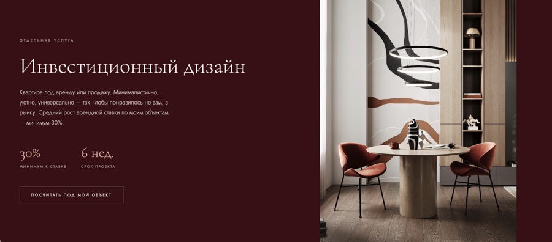

Кристина — веб‑дизайнер
Коммерческие сайты и цифровые продукты — от структуры и пути пользователя до визуальной системы, взаимодействия и запуска.
Drag to explore
01 Enduro EnergyWebsite · UX/UI · Development
02 LadogaBoat rental website
03 Philipp PomazkovMedical website
04 Timofey ArapovHost’s personal brand
05 LianaChina production
06 UniKateInternational marketing agency
07 Liberman StudioInterior design

08 Liberman StudioInvestment design
Web design, UX/UI и разработка. Портфолио выше — то, что уже сделано для реальных проектов.